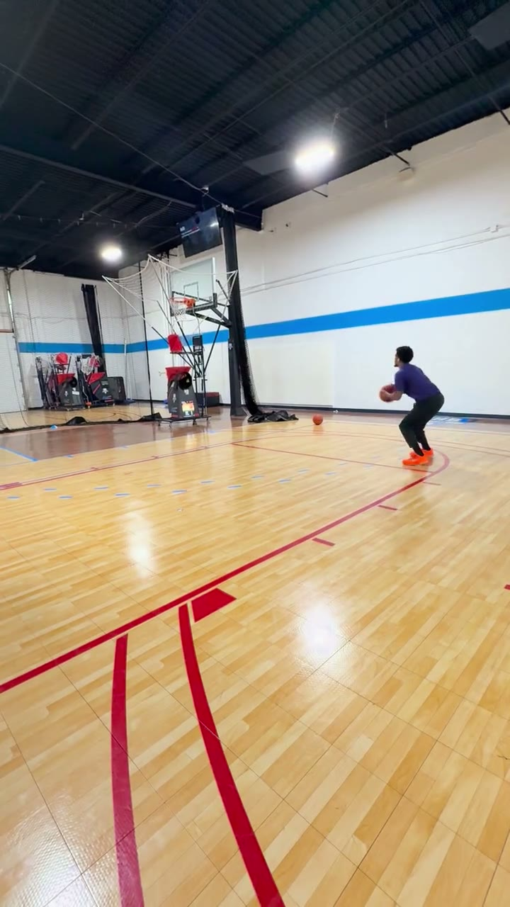

SHOTDNA · YOUR SHOOTING BASELINE
Get to know
your shot.
Mark the gather and release. Measure the visible movement. Compare your next session with your own baseline.

MYKE’S PRACTICE FILM
Pick a session. Study the shot.
Watch the full recordings, then open a clip in the motion lab to mark your gather and release.
These recordings include rear and three-quarter views. Visibility and camera angle affect the measurements. Inspect the selected pose before saving an attempt.
MOTION LAB
Two moments tell a story.
Use a side-on clip with one shooter and their full body in view. Keep the phone steady and use the same camera angle when you retest.
Local video stays on your device. Use a 1–120 second clip, up to 120 MB. You can also analyze one of the three practice recordings above.
Choose a clip and pause at the lowest point of your shooting gather.
Record the same setup name for comparisons. Angles are estimates from the image plane and change with camera position.
Choose the lowest gather frame.
Choose the frame where the ball leaves the hand.
YOUR MOTION FINGERPRINT
Repeat the setup. See the pattern.
Add measured attempts to compare elbow angle, knee bend, and gather-to-release time.
| Attempt | Release elbow | Gather knee | Gather → release | Observed result | Action |
|---|
SHOOTING JOURNAL
Compare with your baseline.
Saved measurements stay in this browser. Export a backup before switching devices.
What do the measurements mean?
Elbow and knee angles use the visible shoulder–elbow–wrist and hip–knee–ankle landmarks. Low-visibility or off-frame joints are excluded. You choose the shooter separately at each frame. Pose estimation supplies the landmarks. Your marked frames supply the gather and release times.
The report shows average angles and standard deviation across your attempts. A smaller spread means your measurements repeated more closely under that setup. Different successful shooters can have different mechanics. The app gives descriptive comparisons, and a coach can help interpret changes alongside results and comfort.
These 2D estimates have no calibrated biomechanics accuracy score. Ball tracking, automatic shot detection, release-height estimates, and coaching validation require further work. MediaPipe Pose Landmarker documentation